11
കുപ്പിയിലെത്ര ? സഞ്ചിയിലെത്ര ?

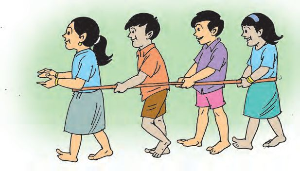
11
കുപ്പിയിലെത്ര ? സഞ്ചിയിലെത്ര ?

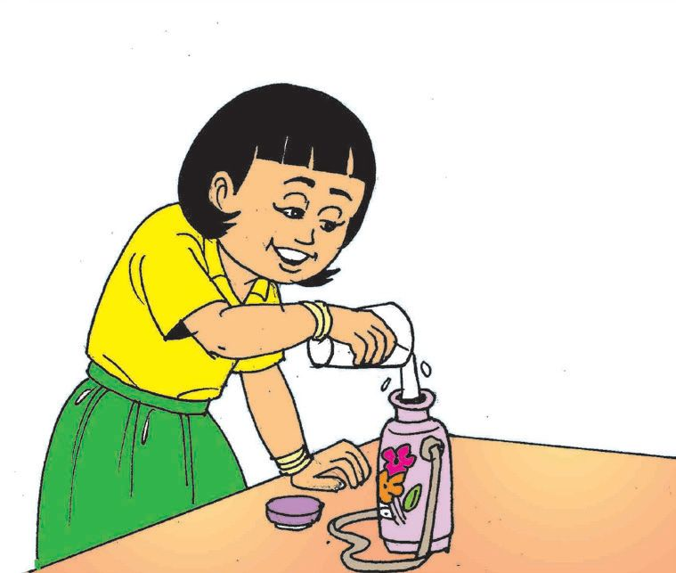

ഗണിതം സ്റ്റാൻഡേർഡ് - III
വെള്ളം കൈമാറിക്കളി
പേജ് 159 ലെ ചിത്രം നോോക്കൂ... ക്ലാസിൽ ജയിച്ച ഗ്രൂപ്പ്
ഈ കളി നമുക്കും കളിക്കാം.
ലേജുവിന്റെ ക്ലാസിലെ കുട്ടികൾ ഗ്രൂപ്പായിട്ടാണ് ഈ കളി കളിച്ചത്. കളിയുടെ അവസാനം ഓരോോ ഗ്രൂപ്പിന്റെയും പാത്രത്തിൽ ഉണ്ടായിരുന്ന വെള്ളമാണ് ഗ്ലാസിൽ ഒഴിച്ചുവച്ചിരിക്കുന്നത്.
ലേജുവിന്റെ ക്ലാസിലെ ഏത് ഗ്രൂപ്പാണ് വിജയിച്ചത് ?
വാട്ടർ ബെൽ
ഇനി ഒഴിഞ്ഞ വാട്ടർ ബോോട്ടിലിൽ വെള്ളം നിറയ്ക്കൂ...
വാട്ടർ ബെൽ കേട്ടല്ലലോ ? എല്ലാവരും വെള്ളം കുടിക്കൂ...
ഏറ്റവും കൂടുതൽ വെള്ളം നിറയ്ക്കാൻ കഴിയുന്ന വാട്ടർ ബോോട്ടിൽ ആരുടേതാണ് ? എത്ര ഗ്ലാസ് വെള്ളം നിറയ്കക്കകാം ? 160

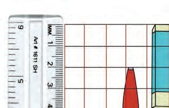
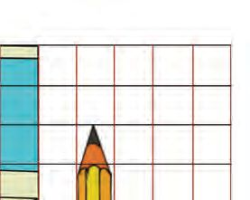
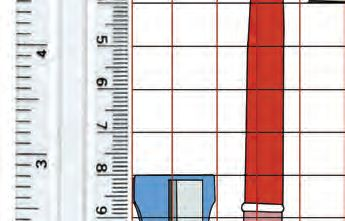
കുപ്പിയിലെത്ര ? സഞ്ചിയിലെത്ര ?
കുപ്പിയിലെത്ര ?
• ഏത് കുപ്പിയിലാണ് ഏറ്റവും കൂടുതൽ വെള്ളം കൊൊള്ളുന്നത് ? കുപ്പിക്കു ചുറ്റും വട്ടം വരയ്ക്കുക. • ഏറ്റവും കുറവ് വെള്ളം കൊൊള്ളുന്ന കുപ്പി ഏതാണ് ? കുപ്പിക്കു ചുറ്റും ചതുരം വരയ്ക്കുക. എന്റെ കുപ്പിയിൽ ഒരു ലിറ്റർ വെള്ളം നിറയ്ക്കാമെന്ന് അമ്മ പറഞ്ഞു.
കുപ്പിയിലെ വെള്ളം ഒരു ലിറ്റർ ആണോോയെന്ന് അളന്നു നോോക്കിയാലോോ ?
വാങ്ങുന്ന സാധനങ്ങൾ നിങ്ങളുടെ വീട്ടിൽ ഒരു ലിറ്റർ അളവിൽ വാങ്ങുന്ന സാധനങ്ങൾ ഏതെല്ലാം ? •
•
•
•
•
•
161


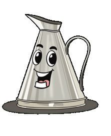
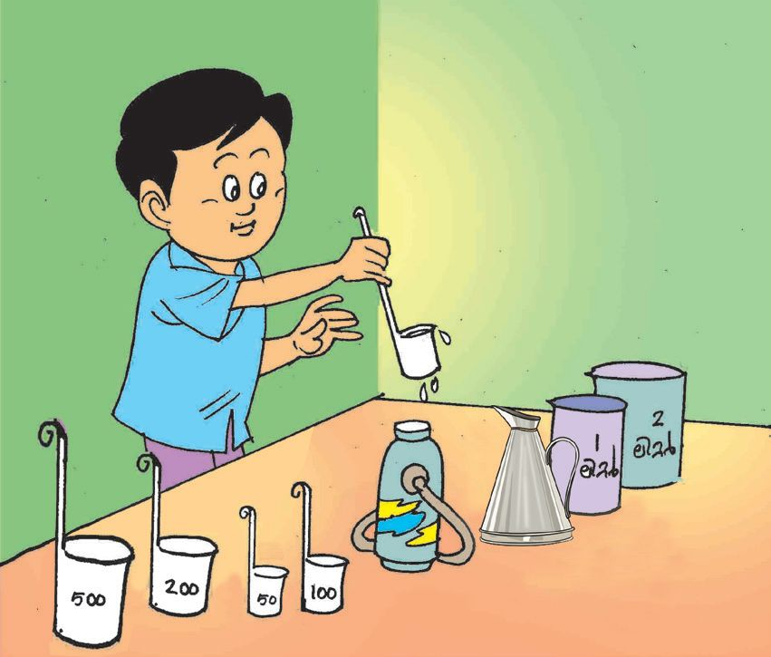

ഗണിതം സ്റ്റാൻഡേർഡ് - III
അളക്കാം... നിറയ്കക്കകാം... ഇത്തരം അളവുപാത്രങ്ങൾ ഉപയോോഗിച്ച് നിങ്ങളുടെ വാട്ടർ ബോോട്ടിലിൽ എത്ര വെള്ളം നിറയ്കക്കകാം എന്ന് നോോക്കൂ.
എനിക്ക് അളവ് പാത്രമില്ല.
അളവുപാത്രം ഉണ്ടാക്കാം ഒഴിഞ്ഞ കുപ്പികൾ ഉപയോോഗിച്ച് അളവുപാത്രങ്ങളുടെ സഹായത്തതോടെ 1 ലിറ്റർ, 500 മില്ലിലിറ്റർ, 200 മില്ലിലിറ്റർ അളവുപാത്രങ്ങൾ ഉണ്ടാക്കുക. ലിറ്ററിനേക്കാൾ ചെറിയ അളവാണ് 200 മില്ലിലിറ്റർ പാത്രത്തിൽ 100 മില്ലിലിറ്റർ, മില്ലിലിറ്റർ. 50 മില്ലിലിറ്റർ എന്നീ അളവുകൾ കൂടി അടയാളപ്പെടുത്തൂ... ഒരു ലിറ്ററിൽ കുറഞ്ഞ അളവിൽ വാങ്ങുന്ന സാധനങ്ങൾ ഏതെല്ലാം ? അവയുടെ അളവ് എഴുതൂ... സാധനം പാൽ
അളവ് 500 മില്ലിലിറ്റർ
162
മില്ലിലിറ്ററിനെ മി.ലി.(ml) എന്നും ലിറ്ററിനെ ലി. (l) എന്നും എഴുതാം.

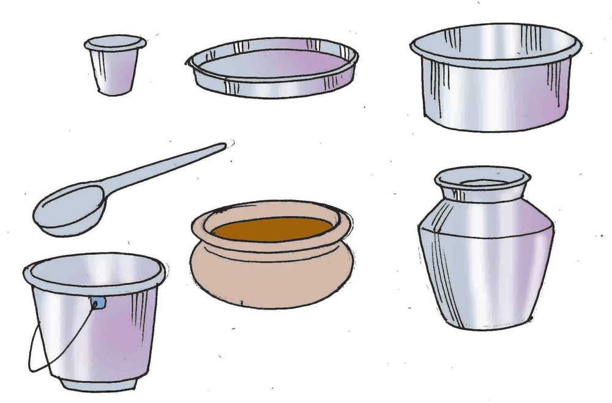
കുപ്പിയിലെത്ര ? സഞ്ചിയിലെത്ര ?
എത്ര വെള്ളം ?
നിങ്ങൾ ഒരു ദിവസം എത്ര ഗ്രാസ് വെള്ളം കുടിക്കുന്നുണ്ട് ? അളന്ന് പറയൂ... നിങ്ങളുടെ അളവുപാത്രം ഉപയോോഗിച്ച് വീട്ടിലെ വിവിധ പാത്രങ്ങളിൽ എത്ര വെള്ളം കൊൊള്ളുമെന്ന് ഊഹിച്ചും അളന്നും എഴുതൂ...
പാത്രം
ഊഹം
ചായ ഗ്ലാസ് കപ്പ് ചായ ഉണ്ടാക്കുന്ന പാത്രം ബക്കറ്റ് മഗ് ചോോറ് വയ്ക്കുന്ന കലം
163
അളവ്


ഗണിതം സ്റ്റാൻഡേർഡ് - III
പാൽ സൊൊസൈറ്റി
ലേജുവിന്റെ അച്ഛൻ സൊൊസൈറ്റിയിൽ പാൽ കൊൊടുത്തു. 2 ലിറ്റർ പാത്രംകൊൊണ്ട് 2 തവണ പാൽ അളന്നു. 1 ലിറ്റർ പാത്രംകൊൊണ്ട് 1 തവണയും അളന്നു. ലേജുവിന്റെ അച്ഛൻ സൊൊസൈറ്റിയിൽ എത്ര ലിറ്റർ പാൽ കൊൊടുത്തു ?
• 2 ലിറ്റർ പാത്രം കൊൊണ്ട് 2 തവണ അളന്നാൽ
............... ലിറ്റർ
• 1 ലിറ്റർ പാത്രം കൊൊണ്ട് 1 തവണ അളന്നാൽ
............... ലിറ്റർ
• പാലിന്റെ അളവ്.
............... ലിറ്റർ
ലേജുവിന്റെ അച്ഛനുശേഷം പാൽ കൊൊടുത്തത് ജാനകിച്ചേച്ചിയായിരു ന്നു. 1 ലിറ്റർ അളവുപാത്രം കൊൊണ്ട് 3 തവണയും 200 മില്ലിലിറ്റർ പാത്രം കൊൊണ്ട് 2 തവണയും പാൽ അളന്നൊൊഴിച്ചു. ജാനകിച്ചേച്ചി എത്ര ലിറ്റർ പാൽ കൊൊടുത്തു ? .............. ലിറ്റർ .............. മില്ലിലിറ്റർ 164


കുപ്പിയിലെത്ര ? സഞ്ചിയിലെത്ര ?
• 1 ലിറ്റർ പാത്രം കൊൊണ്ട് 3 തവണ അളന്നാൽ
............... ലിറ്റർ
• 200 മില്ലിലിറ്റർ പാത്രം കൊൊണ്ട് 2 തവണ അളന്നാൽ
............... മി.ലി.
• പാലിന്റെ അളവ്.
..... ലിറ്റർ ..... മി.ലി.
പാലുവാങ്ങാൻ വന്ന ചായക്കടക്കാരൻ ബഷീറിന് 3 ലിറ്റർ പാൽ കൊൊടുത്തത് ലേജുവിന്റെ അച്ഛൻ കൊൊടുത്ത പാലിൽ നിന്നായിരുന്നു. ബാക്കി എത്ര പാലുണ്ട് ?
ചെറിയ അളവ് ചിത്രത്തിൽ കാണുന്ന ഉപകരണങ്ങൾ ഉപയോോഗിക്കുന്ന സന്ദർഭങ്ങൾ എഴുതൂ...
• കഴിക്കാൻ മരുന്ന് എടുക്കുന്നത്
•
• കറിയിൽ ഉപ്പിടുന്നത്.
•
•
•
•
•
മരുന്നു കഴിക്കുന്ന സ്പൂണിൽ എത്ര മില്ലിലിറ്റർ മരുന്ന് കൊൊള്ളും ? അളന്ന് എഴുതൂ... കുപ്പിയുടെ അടപ്പിൽ എത്ര വെള്ളം കൊൊള്ളും ? അളന്ന് എഴുതൂ... 165


ഗണിതം സ്റ്റാൻഡേർഡ് - III
അത്തർ കച്ചവടം ലേജുവിന്റെ അച്ഛന് അത്തർ കച്ചവടവുമുണ്ട്. മൊൊത്തക്കച്ചവടക്കാരിൽ നിന്നും അത്തർ വാങ്ങി 5 മില്ലിലിറ്റർ കുപ്പിയിൽ നിറച്ചാണ് കച്ചവടം ചെയ്യുന്നത്. 20 കുപ്പിയിൽ നിറയ്ക്കാൻ എത്ര അത്തർ വേണം ?
20 മില്ലിലിറ്റർ അത്തർ
എത്ര കുപ്പിയിൽ നിറയ്കക്കകാം ?
സൂപ്പർമാർക്കറ്റ് എന്തതൊരു ഭാരം! ഉയർത്താനാ കുന്നില്ല.
മോോളേ... ഞാൻ എടുക്കാം.
സൂപ്പർമാർക്കറ്റിലേക്കാവശ്യമായ അത്തർ വിതരണം ചെയ്യുന്നത് ലേജുവിന്റെ അച്ഛനാണ്. അച്ഛനൊൊപ്പം ലേജുവും സൂപ്പർമാർക്കറ്റിലെത്തി. ഒരു കിലോോഗ്രാം ഭാരം വരുന്ന എന്തെല്ലാം സാധനങ്ങൾ വീട്ടിൽ വാങ്ങാറുണ്ട് ? • •
ഒരു കിലോോഗ്രാം പഞ്ചസാര വാങ്ങണം
• • • 166

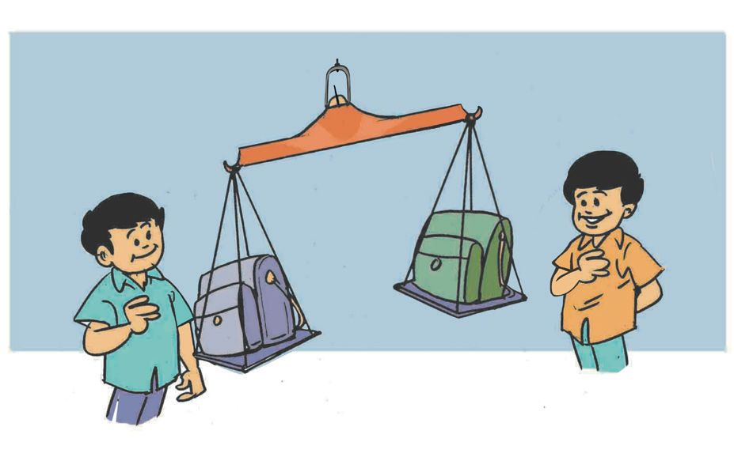

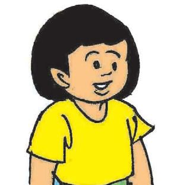
കുപ്പിയിലെത്ര ? സഞ്ചിയിലെത്ര ?
ലേജുവും അച്ഛനും സൂപ്പർമാർക്കറ്റിൽ നിന്നും വാങ്ങിയ സാധനങ്ങൾ അരി - 10 കിലോോഗ്രാം പഞ്ചസാര ആട്ട - 5 കിലോോഗ്രാം റവ
- 1 കിലോോഗ്രാം
അരിപ്പപൊടി - 2 കിലോോഗ്രാം
- 2 കിലോോഗ്രാം ചെറുപയർ - 1 കിലോോഗ്രാം സാധനങ്ങൾ ഞാനെടുക്കാം.
ഓട്ടടോ വിളിക്കണേ...
സൂപ്പർ മാർക്കറ്റിൽ നിന്നുവാങ്ങിയ സാധനങ്ങളുടെ ഭാരം .................. കിലോോഗ്രാം
എന്തതൊരുഭാരം! ക്ലാസ് മുറിയിൽ നിങ്ങൾക്ക് തനിയെ ഉയർത്താനാകുന്ന വസ്തുക്കൾ ഏതൊൊ ക്കെയാണ് ? ഉയർത്താനാകാത്തതോോ ? ഉയർത്താനാകുന്ന ഉയർത്താനാകാത്ത വസ്തുക്കൾ വസ്തുക്കൾ
എന്റെ ബാഗിനാ ഭാരം കൂടുതൽ.
അല്ല എന്റേതിനാ.
167


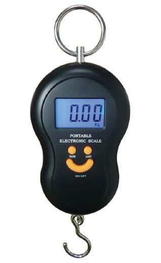

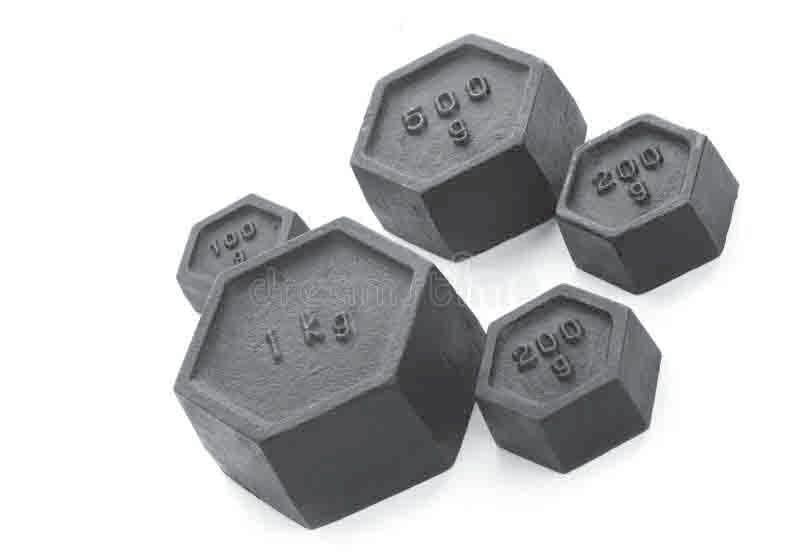
ഗണിതം സ്റ്റാൻഡേർഡ് - III
അളന്നുനോോക്കാനെന്തതൊക്കെ ?
കിലോോഗ്രാമിനേ ക്കാൾ ചെറിയ അളവാണ് ഗ്രാം.
ഭാരം അളക്കുന്നത് കിലോോഗ്രാമിലോോ ഗ്രാമിലോോ ആണ്.
അളന്നു നോോക്കിയാലോോ ? എന്റെ ബാഗിന്റെ ഭാരം ഊഹം
അളന്നുകണ്ടെത്തിയത്
സുഹൃത്തിന്റെ ബാഗിന്റെ ഭാരം ഊഹം
എന്റെ ഭാരം ഊഹം
അളന്നുകണ്ടെത്തിയത്
അളന്നുകണ്ടെത്തിയത്
സുഹൃത്തിന്റെ ഭാരം ഊഹം
168
അളന്നുകണ്ടെത്തിയത്

കുപ്പിയിലെത്ര ? സഞ്ചിയിലെത്ര ?
ആരോോഗ്യ ചാർട്ട് ക്ലാസിലുള്ളവരുടെ വിവരങ്ങൾ കണ്ടെത്തി ചാർട്ട് പൂർത്തിയാക്കൂ. ആൺകുട്ടികൾ പേര്
വയസ്സ്
പെൺകുട്ടികൾ
ഉയരം ഭാരം സെന്റിമീറ്റർ കിലോോഗ്രാം
പേര്
വയസ്സ്
ഉയരം ഭാരം സെന്റിമീറ്റർ കിലോോഗ്രാം
കുടുംബാരോോഗ്യകേന്ദ്രത്തിലെ ചാർട്ടുപ്രകാരം 7, 8, 9 വയസ്സ് പ്രായത്തിലുള്ളവർക്ക് ഉണ്ടാകേണ്ട ഉയരവും ഭാരവുമാണ് പട്ടികയിൽ. ആൺകുട്ടികൾ
പെൺകുട്ടികൾ
ഉയരം ഉയരം ഭാരം വയസ്സ് സെന്റിമീറ്ററിൽ വയസ്സ് സെന്റിമീറ്ററിൽ കിലോോഗ്രാമിൽ
ഭാരം കിലോോഗ്രാമിൽ
7
122
23
7
121
22
8
127
26
8
126
25
9
133
28
9
133
28
നിങ്ങളുടെ ക്ലാസിലെ കൂട്ടുകാരുടെ ഭാരവും ഉയരവും മുകളിൽ തന്ന ചാർട്ടിന്റെ അടിസ്ഥാനത്തിൽ വിലയിരുത്തി ഒരു കുറിപ്പ് തയ്യാറാക്കൂ...
169

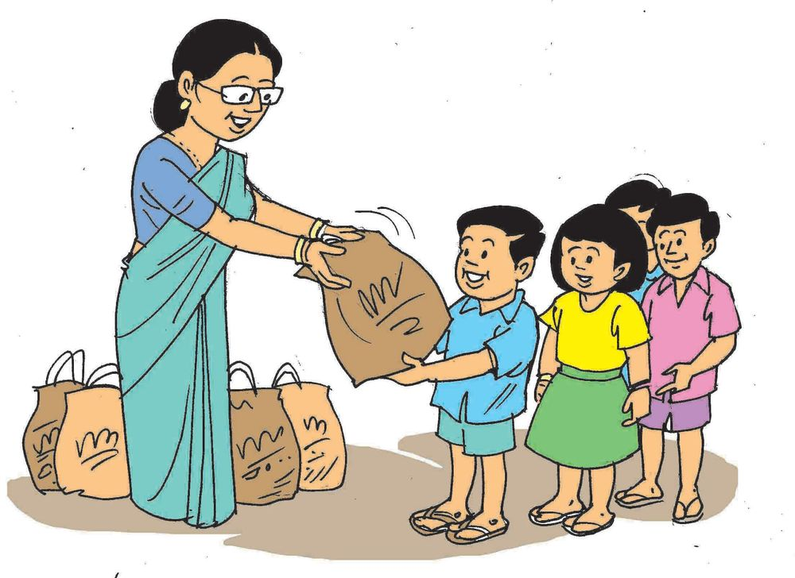
ഗണിതം സ്റ്റാൻഡേർഡ് - III
ഭക്ഷണക്കിറ്റ്
ലേജുവിന്റെ വീടിനടുത്തുള്ള പുഞ്ചിരി ക്ലബ്ബ് ഓണത്തിന് വിതരണം ചെയ്ത കിറ്റിലുൾപ്പെടുത്തിയ വിവിധ സാധനങ്ങളും അവയുടെ ഭാരവും ആണ് താഴെ പട്ടികയിൽ. തേയില
100 ഗ്രാം
മഞ്ഞൾ പൊൊടി
100 ഗ്രാം
പഞ്ചസാര
1 കിലോോഗ്രാം
വെളിച്ചെണ്ണ
1 കിലോോഗ്രാം
പച്ചരി
500 ഗ്രാം
കശുവണ്ടിപ്പരിപ്പ് 40 ഗ്രാം നെയ്യ്
50 ഗ്രാം
ചെറുപയർ
500 ഗ്രാം
ഏലയ്ക്ക
10 ഗ്രാം
തുവരപ്പരിപ്പ്
200 ഗ്രാം
ശർക്കരവരട്ടി
50 ഗ്രാം
ഉപ്പ്
1 കിലോോഗ്രാം
മുളകുപൊൊടി
500 ഗ്രാം
ഏത്തയ്ക്ക ചിപ്സ്
250 ഗ്രാം
• 1 കിലോോഗ്രാം ഭാരമുള്ള എത്ര സാധനങ്ങൾ കിറ്റിലുണ്ട് ? അവയുടെ ഭാരം എത്രയാണ് ? 170
കുപ്പിയിലെത്ര ? സഞ്ചിയിലെത്ര ?
• 1 കിലോോഗ്രാമിൽ കുറവ് ഭാരമുള്ള ഏതെല്ലാം സാധനങ്ങൾ കിറ്റിലുണ്ട് ?
250 ഗ്രാം – കാൽ കിലോോഗ്രാം 500 ഗ്രാം – അര കിലോോഗ്രാം 750 ഗ്രാം – മുക്കാൽ
കിലോോഗ്രാം
വിലയിരുത്തൽ പ്രവർത്തനങ്ങൾ 1. എത്ര കുപ്പി ?
ഒരു പലചരക്ക് കടയിൽ 10 ലിറ്റർ വെളിച്ചെണ്ണ സ്റ്റോക്കുണ്ട്. ഇത് ഒരു ലിറ്റർ കുപ്പികളിൽ നിറയ്ക്കാൻ എത്ര കുപ്പി വേണം ? രണ്ട് ലിറ്ററിന്റെ കുപ്പിയാണെങ്കിലോോ ? 2. ലേജുവിന്റെ വീട്
ലേജുവിന്റെ വീട് പെയിന്റ് ചെയ്യണം. വാങ്ങിയ പെയിന്റിന്റെ അളവ് ചുവടെ കൊൊടുക്കുന്നു. പെയിന്റിന്റെ നിറം വെള്ള പച്ച മഞ്ഞ വയലറ്റ് നീല ആകെ എത്ര പെയിന്റ് വാങ്ങി ?
171
അളവ് 20 ലിറ്റർ 5 ലിറ്റർ 5 ലിറ്റർ 1 ലിറ്റർ 2 ലിറ്റർ

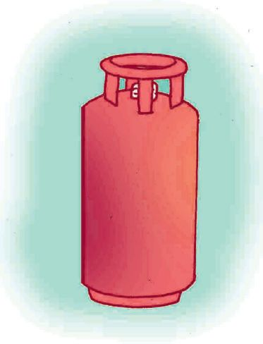
ഗണിതം സ്റ്റാൻഡേർഡ് - III
3. ഗ്യയാസ് സിലിണ്ടർ
ഗ്യയാസ് നിറച്ച ഒരു സിലിണ്ടറിന്റെ ഭാരം 29 കിലോോ ഗ്രാമാണ്. ഒഴിഞ്ഞ സിലിണ്ടറിന്റെ ഭാരം 15 കിലോോ ഗ്രാമാണ്. സിലിണ്ടറിനുള്ളിലുള്ള ദ്രാവകത്തിന്റെ ഭാരം എത്രയാണ് ? പകുതി ഗ്യാാസുള്ളപ്പോോൾ സിലിണ്ടറിന്റെ ആകെ ഭാരമെത്രയാണ് ? 4. എണ്ണ അളക്കാം 500 മില്ലിലിറ്റർ എണ്ണ വേണം. 200 മില്ലിലിറ്റർ, 100 മില്ലിലിറ്റർ അളവ് പാത്രങ്ങൾ ആണുള്ളത്. ഇവ ഉപയോോഗിച്ച് 500 മില്ലിലിറ്റർ എണ്ണ എങ്ങനെയൊൊക്കെ അളക്കാം ? 5. എങ്ങനെ അളക്കാം ? 500 മില്ലിലിറ്റർ, 200 മില്ലിലിറ്റർ അളവ് പാത്രങ്ങളാണ് ഉള്ളത്. ഇവ ഉപയോോഗിച്ച് 100 മില്ലിലിറ്റർ അളക്കുന്നതെങ്ങനെ ? 6. ഗണിതലാബ്
ഗണിതലാബിലേക്ക് 4 തൂക്കക്കട്ടികൾ ഉണ്ടാക്കി. 4 കട്ടികളുടെയും ആകെ ഭാരം 15 കിലോോഗ്രാം ആണ്. ഈ കട്ടികൾ ഉപയോോഗിച്ച് 1 മുതൽ 15 കിലോോഗ്രാം വരെയുള്ള ഭാരം അളക്കാം. ഓരോോ തൂക്കക്കട്ടിയുടെയും ഭാരമെത്രയാണ് ? 14 കിലോോഗ്രാം ഭാരം കണക്കാക്കുന്നതെങ്ങനെ ? 7 കിലോോഗ്രാം അളക്കുന്നതോോ ?
172